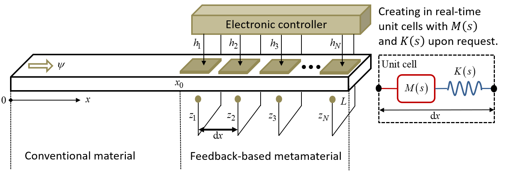

Waveguiding by feedback-based generation of user-defined parameters
We converted a beam in axial vibration into a tunable and reconfigurable metamaterial using feedback control. Our control algorithm was capable to achieve different regimes of effective dynamic stiffness K and mass M for the same operating frequency, including zero stiffness and negative mass for wave propagation suppression, double negative parameters for backward wave propagation, and double zero parameters for total impedance matching. These properties could be activated, deactivated, or tuned in real-time, given that the design did not require any passive periodic feature embedded in the host structure, unlike traditional metamaterial designs. We considered an external actuation approach, by bonding actuators to an initially homogeneous beam.

Regime 1: M<0, K=0.
Regime 2: M<0, K<0.
Regime 3: M=0, 1/K=0.
Feedback-based reconfigurable elastic metamaterials
Related publications
L. Sirota, F. Semperlotti, and A. M. Annaswamy.
Mechanical Systems and Signal Processing, vol. 123, pp. 117–130, 2019.